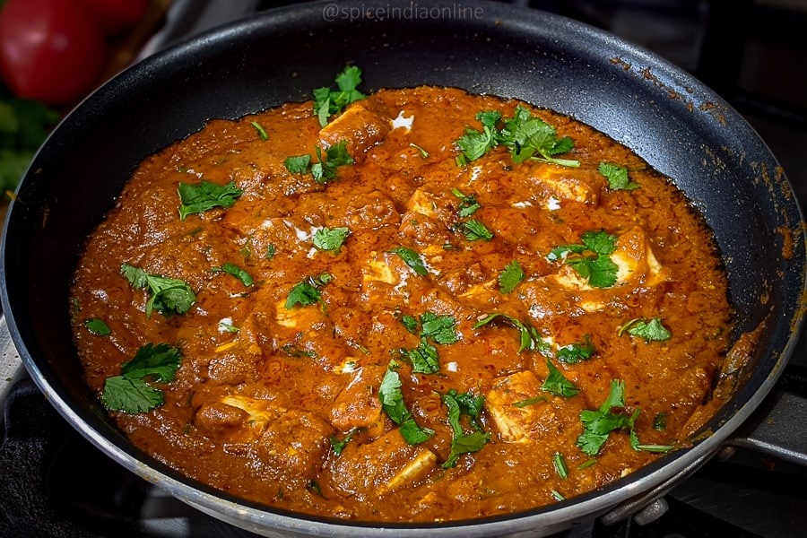

Paneer Butter Masala

Paneer Butter Masala, also known as Paneer Makhani, is one of India's most
beloved vegetarian curries. This quintessential North Indian dish features
soft, succulent cubes of paneer (Indian cottage cheese) simmered in a
rich, velvety, and mildly sweet tomato-based gravy. The sauce gets its
signature creaminess from a blend of cashews and cream, while a medley of
aromatic spices like garam masala and kasuri methi (dried fenugreek
leaves) lends it a complex, irresistible flavor. Finished with a generous
knob of butter, this dish is a true indulgence for the senses, perfect for
pairing with warm naan bread or fluffy basmati rice.
Ingredients
- Paneer 250-300 g, cubed
- Butter 2 tbsp (unsalted preferred) and 1 tbsp oil
- Onions 1 cup sliced; tomatoes 2 cups sliced
- Cashews 15 (about 30 g)
-
Ginger 1 inch and garlic 5-6 cloves (or 1.5-2 tsp ginger-garlic paste)
-
Kashmiri red chili powder ¾-1 tsp; garam masala ¾-1 tsp; coriander
powder 1 tsp (optional)
-
Kasuri methi ½ tbsp; cream 3-4 tbsp; salt; optional sugar/jaggery 1 tsp
-
Optional whole spices: bay leaf, cinnamon, cloves; water as needed
Steps
-
Sauté cardamom (optional), onions, ginger, and garlic in 1 tbsp oil for
4–5 minutes until onions turn translucent.
-
Add tomatoes, salt, and cashews; cover and cook until tomatoes are
mushy, then stir in chili powder, coriander powder, and garam masala;
cool and blend very smooth with cold water.
-
In the same pan, melt butter (add bay leaf, cinnamon, cloves if using),
strain the puree back in, add a splash of water, and simmer 10–12
minutes until slightly thick and glossy, stirring periodically.
-
Adjust salt, add kasuri methi and optional sugar, then stir in cream and
paneer; cook 2-3 minutes on low heat and garnish with cream and
coriander.
HOME